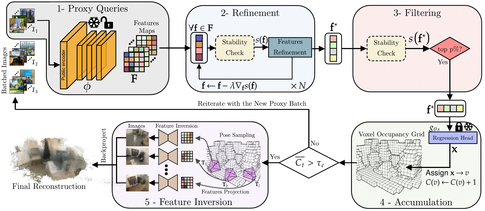

Seeing Through the Weights: Privacy Leakage in Scene Coordinate Regression
*Equal contribution † Corresponding author
1Stony Brook University, 2Ghent University Global Campus, 3George Mason University Korea, 4SUNY Korea
ECCV 2026
Abstract
Scene Coordinate Regression (SCR) methods are increasingly adopted for visual localization. In these approaches, the scene is implicitly encoded within a neural network that regresses a 3D world coordinate for each image pixel. Because the scene is represented only through the network parameters and not stored explicitly as images or maps, such methods are often assumed to be privacy-preserving. In this work, we show that this assumption is incorrect in practice.
We introduce a query-based attack that reconstructs the 3D geometry of the training environment from an SCR model under different levels of model access. We repeatedly query the model with batches of proxy images unrelated to the target scene to obtain dense pixel-wise 3D coordinates. Reliable points are identified through their stability under small input perturbations and can be further refined in a white-box setting. These stable points are accumulated across independent query batches to recover scene geometry. From the recovered 3D representation, we also invert network features to synthesize images from arbitrary viewpoints, revealing additional appearance information.
Experiments on indoor and outdoor datasets demonstrate that substantial portions of training environments can be reconstructed with high geometric fidelity. Beyond geometry, we recover approximate color appearance, exposing recognizable layout and potentially sensitive scene elements.
Method

Qualitative Comparison
7scenes Results
BibTeX
@article{nasypanyi2026seeing,
title={Seeing Through the Weights: Privacy Leakage in Scene Coordinate Regression},
}